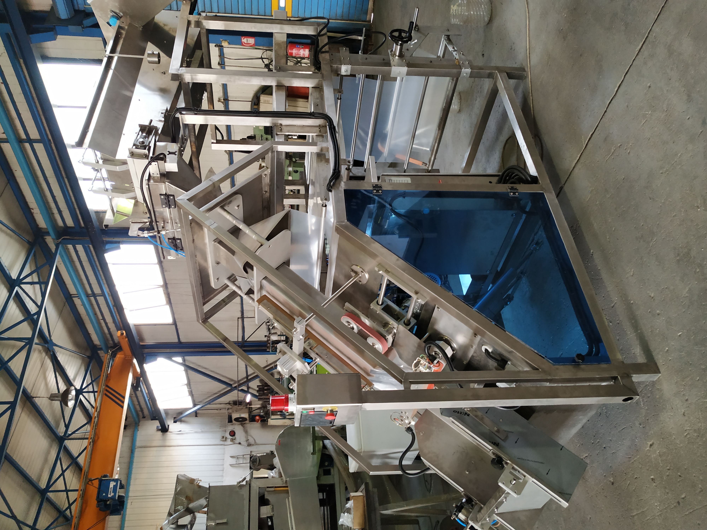

AUTOMATIC PACKAGING
PERFECTION OF THE VERTICAL PACKAGING TECHNOLOGY
Through continued development of their technology, and use of the highest quality branded components and materials, Sinpack Engineering ensures to provide machines with industry-leading speed, efficient operation, maximum reliability and a long service life.
Sinpack Engineering's philosophy is to provide their customers around the world with a wide range of versatile and specialized vertical packaging machines tailored to their individual needs.
The customers are able to choose between two dominant directional styles of the machine (vertical-inclined) depending on their packaging needs and other engineering restraints.
Discover which type is best for you
The vertical automatic packaging machine is able to package many different granular products in cooperation with a weighing system or a volumetric cups' system in a direct vertical line providing high-speed and high quality accurate packaging

- Bag width
- Bag length
- Bag type
- Production rate
- Feeding system
- Bag weight range
- Weight accuracy
- Film material
- Film roll centering
- Film roll positioning
- Sealing type
- Machine material 1
- Machine material 2
- 250mm -> 500 mm
- 300mm -> 800mm
- Pillow bag with handle
- Up to 20bag/min
- Weighing/Volumetric
- 1kg -> 10kg
- 2%
- Polyethylene
- Auto / Manual
- Pneumatical/Mechanical
- Impulse / Heat-sealing
- INOX 304L stainless steel
- Anodized aluminum
The inclined automatic packaging machine is able to package many different granular products in cooperation with a weighing system or a volumetric cups' system in a more indirect angular way in order to provide less gravitational impact on the transfering material.

- Bag width
- Bag length
- Bag type
- Production rate
- Feeding system
- Bag weight range
- Weight accuracy
- Film material
- Film roll centering
- Film roll positioning
- Sealing type
- Machine material 1
- Machine material 2
- 250mm -> 500 mm
- 300mm -> 800mm
- Pillow bag with handle
- Up to 20bag/min
- Weighing/Volumetric
- 1kg -> 10kg
- 2%
- Polyethylene
- Auto / Manual
- Pneumatical/Mechanical
- Impulse / Heat-sealing
- INOX 304L stainless steel
- Anodized aluminum